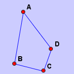

Show Object
First, this action makes all the hidden object to be shown temporarily. Then the user can click some objects to make these objects visible again.

Hide Object
This action allows the user to hide unecessary objects to make the diagram looks nice.